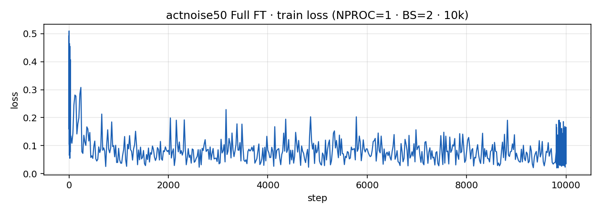

actnoise50 — action Gaussian + 成功デモのみ · Full FT
MimicGen 風に、OSC retrack 時の action に Gaussian を載せ、
open-loop 成功したデモだけ学習に使う実験。2026-10-16 評価完了。
stategauss（proprio だけ嘘）ではなく、実行・記録した action 自体にノイズ → 画像 / state / action は一致。
結論: closed-loop 成功率は 0% (0/50)。
near は 50/50 だが grasp 2 / lift·transport·place_near 各 1。
成功デモ＋action noise でも掴み以降で落ちる → 現行の長い scripted 軌道上では不十分、という線が強い。
1. 学習条件
| robot / task | Sawyer · LIBERO object task0（alphabet soup → basket） |
|---|---|
| デモ生成 | ik_set live → delta_osc retrack · path_step=0.008 · --require-open-loop |
| action noise | xyz σ=0.05 · ori σ=0.02（正規化 [-1,1]）· gripper なし · copies=3 · clean なし |
| データ | libero_sawyer_scripted_obj0_osc_v8_actnoise50（open-loop 成功 111本から先頭 50 本） |
| デモの成否 | 学習 50 本すべて open_loop_ok · passed/lifted/placed · noise>0 |
| init | pi05_libero_pytorch |
| 学習 | Full FT · steps=10000 · NPROC=1 × BS=2（実効 BS=2 · GPU空きのため）· lr peak≈5e-5 |
| stategauss | なし（デモ側の action noise のみ） |
| 完了 | 学習 2026-10-15 03:40 · 評価 2026-10-16 08:08 |
2. 推論条件
| 方式 | closed-loop（観測 → ポリシー → action）。デモ再生ではない |
|---|---|
| 初期配置 | 標準 eval · init 0–49（学習デモの init 集合とは別） |
| trials / seed | 50 · seed=7 |
| max_steps | 1200（env_horizon=1260）· 20 Hz · home_w30 |
| 評価時ノイズ | なし |
| ckpt | .../actnoise50_a0.05_effbs2/10000 |
3. 結果
| 条件 | 成功率 | near | grasp | lift | transport | place_near |
|---|---|---|---|---|---|---|
| actnoise50 · Full FT · 10k · 標準 eval | 0% (0/50) | 50/50 | 2/50 | 1/50 | 1/50 | 1/50 |
参考: clean50 Full FT（noise=0）も 0%。stategauss 5mm のみ標準 eval で 2%。
4. 学習曲線
train log から抽出（wandb なし）。loss は低下。

steps 0–10000 · final loss ≈ 0.036 · 成功率は 0% のまま
5. デモ動画（学習データ）
open-loop 成功・action noise 付きの学習デモ（parquet 画像から書き出し）。いずれもタスク成功軌道。
demo ep0 · init0 · act* · open-loop OK
demo ep1 · init1 · act* · open-loop OK
demo ep2 · init2 · act* · open-loop OK
6. 推論動画（closed-loop）
標準 init 0–49。success 0本のため、ファイルサイズが大きい（比較的長く動いた）例を掲載。
infer · ep19 init19 · near まで · success なし
infer · ep13 init13 · near まで · success なし
infer · ep6 init6 · near まで · success なし
infer · ep0 init0 · 代表例
7. メモ
- デモは長い（〜1000 frames @20Hz）。UR5e の短い OSC（140 steps）とは作り方が違う。
- 学習は GPU OOM 回避のため effbs=2（通常 clean50 Full FT は effbs=4）。
- 動画・ログ:
/share7/.../logs/actnoise50_libero/·.../videos/actnoise50_..._max1200/